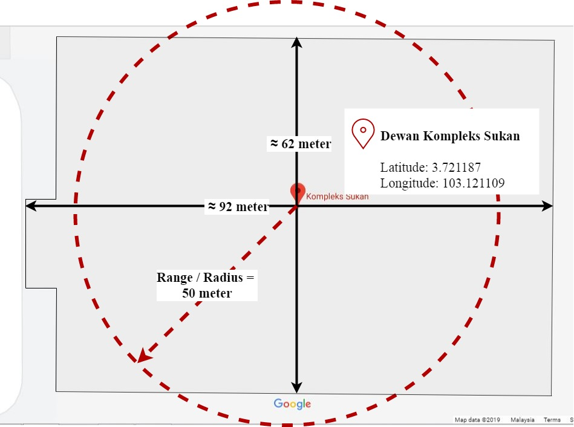
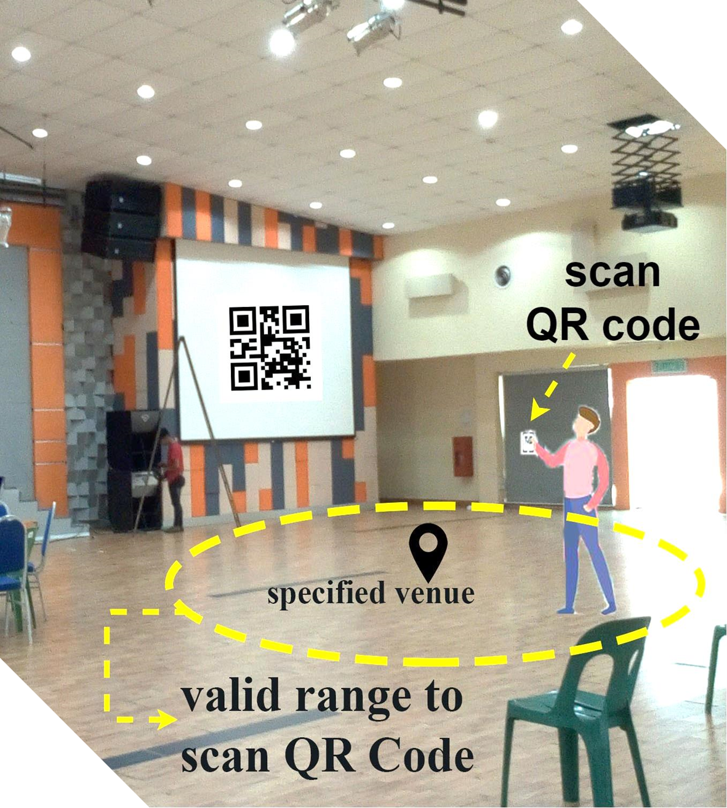

EventAIO
|
|
|
EventAIO is an event management mobile application with QR code and geolocation technology proposed with the intention to minimize the problems faced by the participants and organizer during an event check-in process. The application generates QR code with unique data upon adding an event. The students are required to scan the correct QR code within the specified range at the venue for success check-in. The QR code and geolocation technology implemented in the event management application assist in minimizing the likelihood of fake attendance, human error, and unexpected accidents which could obstruct the check-in process. |
|
Target User
|
Problem Statement1. Intranet web-based event management system:
2. Manual check-in:
3. Fake attendance:
|
Other Check-In Method1. Scan QR code:
2. Face recognition:
|
Development Tools
‣ IDE: Android Studio
|
Firebase Realtime Database and Firebase StorageRealtime is the process by which the data are handled quickly or instantly as it is happening “live” and there is no noticeable delay experienced by the user. Since Firebase is a hosted cloud service, it solves the limitation of the intranet web-based event management system for an organization. All data are accessible to the user, at any place, when they are connected to the Internet. |
QR Code TechnologyThe application generates a QR code with unique data upon adding an event. The event organizer can view and download the generated QR code. A student is required to scan the QR code to check-in. Scanning the wrong QR code will result in unsuccessful check-in. |
Geolocation TechnologyParticipants have to attend the event to scan the QR code at the event venue within the defined range to check-in for the event. The user has to enable the device’s GPS or location setting for the application to detect location. 
Haversine Formula
|
Application FeaturesFor Organizer (Staff or Club's Secretary)
For Participants
|
|
Download the app here and try it now! PS: request login details from the developer & scan the QR code near the poster to check-in  |
Any problem? Contact developer at: chhew96@gmail.com
© 2019. Hew Chin Hui.